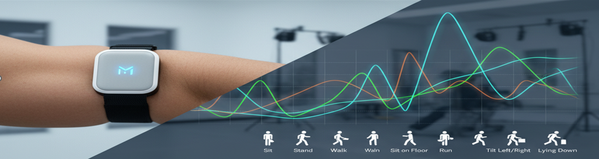

May 2026
Expected Graduation
Senior Computer Engineering student building embedded, IoT, and hardware-software systems.
I am a Computer Engineering student at the University of St. Thomas with hands-on experience in embedded systems, real-time data collection, Android BLE development, tutoring, and front-end web development. My work has ranged from sensor-driven IoT systems and embedded security projects to FPGA and digital design work, and I am especially interested in projects where hardware and software have to work together cleanly.
Expected Graduation
Computer Engineering
Dean's List
I tutor students in circuit analysis, digital design, embedded systems, and programming, helping them debug problems step by step and communicate technical ideas more clearly.
I am part of an industry-sponsored senior design project focused on embedded systems, hardware-software integration, and real-time data processing under NDA.
I build and improve responsive front-end experiences, support API-connected features, and work on making the platform cleaner, faster, and easier to use.
A few examples of the kind of work I like building across embedded systems, mobile-connected hardware, and digital design.

Multi-node Raspberry Pi and STM32 system with BLE phone interface, live sensor updates, and hardware control from mobile.

Temperature-regulated safe box using sensors, keypad, LCD, servo locking, PWM control, and interrupt-driven behavior.

FPGA and digital logic work including timing logic, display control, and audio-processing style projects like the echo effect pipeline.

Smartwatch activity recognition work using sensor data analysis, MATLAB workflows, and careful review of generated processing code.
Languages: C/C++, Python, Java, HTML, CSS, JavaScript
Tools: STM32, Raspberry Pi, Multisim, Ultiboard, Xilinx Vivado, Keil uVision, MATLAB, Arduino
Strengths: technical writing, problem-solving, teamwork, adaptability, communication
I am most interested in roles involving embedded systems, firmware, hardware-software integration, real-time systems, and practical engineering work where reliability and usability both matter.
More on Resume